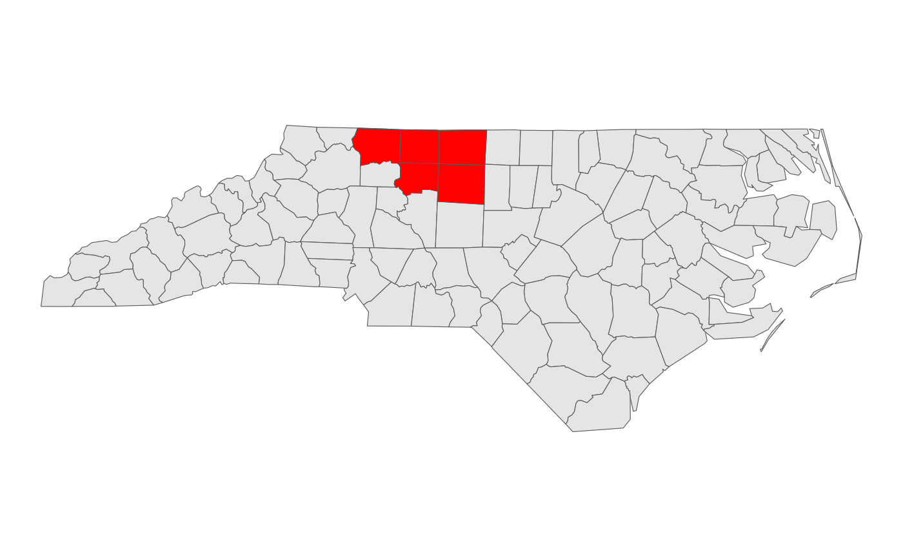
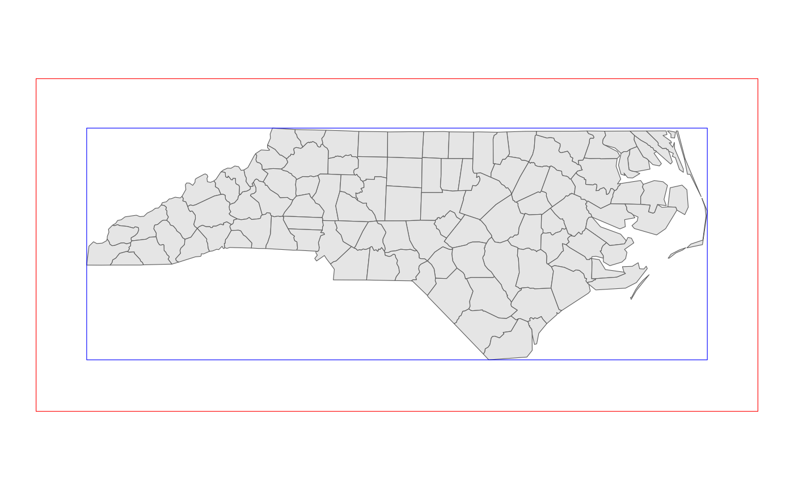
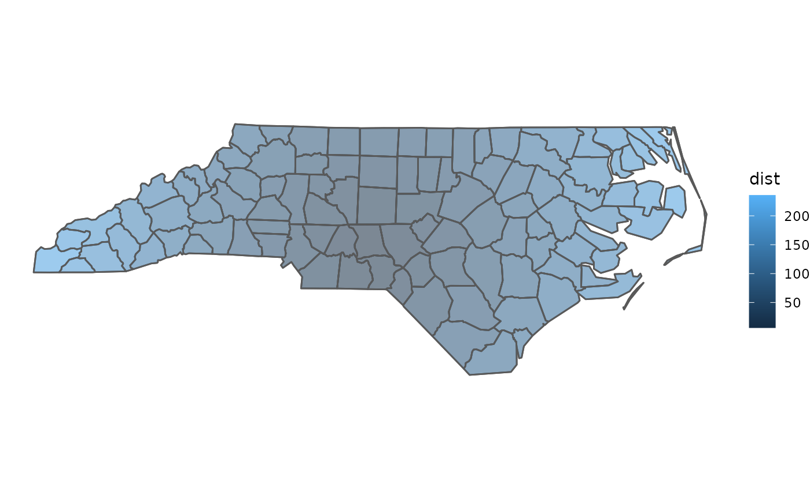

The {sfext} package has several categories of functions:
- Functions for reading and writing spatial data
- Converting the class or geometry of objects
- Modifying sf, sfc, and bbox objects
- Getting information about sf, sfc, and bbox objects
- Working with units and scales
Reading and writing sf objects
Reading sf objects
read_sf_ext() calls one of four other functions depending on the input parameters:
read_sf_path() is similar to sf::read_sf but has a few additional features. It checks the existence of a file before reading, supports the creation of wkt_filter parameters based on a bounding box, and supports conversion of tabular data to simple feature objects.
nc <- read_sf_ext(path = system.file("shape/nc.shp", package = "sf"))
# This is equivalent to read_sf_path(system.file("shape/nc.shp", package = "sf"))
# Or sf::read_sf(dsn = system.file("shape/nc.shp", package = "sf"))
glimpse(nc)
#> Rows: 100
#> Columns: 15
#> $ AREA <dbl> 0.114, 0.061, 0.143, 0.070, 0.153, 0.097, 0.062, 0.091, 0.11…
#> $ PERIMETER <dbl> 1.442, 1.231, 1.630, 2.968, 2.206, 1.670, 1.547, 1.284, 1.42…
#> $ CNTY_ <dbl> 1825, 1827, 1828, 1831, 1832, 1833, 1834, 1835, 1836, 1837, …
#> $ CNTY_ID <dbl> 1825, 1827, 1828, 1831, 1832, 1833, 1834, 1835, 1836, 1837, …
#> $ NAME <chr> "Ashe", "Alleghany", "Surry", "Currituck", "Northampton", "H…
#> $ FIPS <chr> "37009", "37005", "37171", "37053", "37131", "37091", "37029…
#> $ FIPSNO <dbl> 37009, 37005, 37171, 37053, 37131, 37091, 37029, 37073, 3718…
#> $ CRESS_ID <int> 5, 3, 86, 27, 66, 46, 15, 37, 93, 85, 17, 79, 39, 73, 91, 42…
#> $ BIR74 <dbl> 1091, 487, 3188, 508, 1421, 1452, 286, 420, 968, 1612, 1035,…
#> $ SID74 <dbl> 1, 0, 5, 1, 9, 7, 0, 0, 4, 1, 2, 16, 4, 4, 4, 18, 3, 4, 1, 1…
#> $ NWBIR74 <dbl> 10, 10, 208, 123, 1066, 954, 115, 254, 748, 160, 550, 1243, …
#> $ BIR79 <dbl> 1364, 542, 3616, 830, 1606, 1838, 350, 594, 1190, 2038, 1253…
#> $ SID79 <dbl> 0, 3, 6, 2, 3, 5, 2, 2, 2, 5, 2, 5, 4, 4, 6, 17, 4, 7, 1, 0,…
#> $ NWBIR79 <dbl> 19, 12, 260, 145, 1197, 1237, 139, 371, 844, 176, 597, 1369,…
#> $ geometry <MULTIPOLYGON [°]> MULTIPOLYGON (((-81.47276 3..., MULTIPOLYGON ((…
bbox <- as_bbox(nc[10, ])
nc_in_bbox <- read_sf_ext(path = system.file("shape/nc.shp", package = "sf"), bbox = bbox)
nc_basemap <-
ggplot() +
geom_sf(data = nc)
nc_basemap +
geom_sf(data = nc_in_bbox, fill = "red")
The second, read_sf_url(), that supports reading url that are already supported by sf::read_sf but also supports ArcGIS Feature Layers (using the {esri2sf} package) and URLs for tabular data (including both CSV files and Google Sheets). Several functions also support queries based on a name and name_col value (generating a simple SQL query) based on the provided values.
sample_esri_url <- "https://services.arcgis.com/P3ePLMYs2RVChkJx/arcgis/rest/services/USA_States_Generalized_Boundaries/FeatureServer/0"
states <- read_sf_esri(url = sample_esri_url)
#> Layer Type: Feature Layer
#> Geometry Type: esriGeometryPolygon
#> Service Coordinate Reference System: 4326
#> Warning in getEsriFeatures(queryUrl, outFields, where, bbox, token, crs, : No
#> records match the search criteria.
# This is equivalent to read_sf_url(sample_esri_url)
# Or esri2sf::esri2sf(url = sample_esri_url)
# read_sf_esri and read_sf_query both support the name and name_col parameters
# These parameters also work with read_sf_pkg for cached and extdata files
nc_esri <- read_sf_ext(url = sample_esri_url, name_col = "STATE_NAME", name = "North Carolina")
#> Layer Type: Feature Layer
#> Geometry Type: esriGeometryPolygon
#> Service Coordinate Reference System: 4326
#> Warning: Package "pbapply" needed to use the progress argument. Please install
#> it. Setting `progress` to FALSE.
ggplot() +
geom_sf(data = states) +
geom_sf(data = nc_esri, fill = "red")The read functions also support URLs for GitHub Gists (assuming the first file in the Gist is a spatial data file) or Google MyMaps.
gmap_data <- read_sf_ext(url = "https://www.google.com/maps/d/u/0/viewer?mid=1CEssu_neU7lx_vAZs5qpufOBoUQ&ll=-3.81666561775622e-14%2C0&z=1")
ggplot() +
geom_sf(data = gmap_data[2, ])The third, read_sf_pkg(), can load spatial data from any installed package including exported data, files in the extdata folder, or data in a package-specific cache folder. This is particularly useful when working with spatial data packages such as {mapbaltimore} or {mapmaryland}.
The fourth, read_sf_query(), is most similar to sf::read_sf but provides an optional spatial filter based on the bbox parameter and supports the creation of queries using a basic name and name_col parameter.
Writing sf objects
write_sf_ext() wraps sf::write_sf but uses make_filename() to support the creation of consistent file names using labels or date prefixes to organize exports.
make_filename(
name = "Ashe County",
label = "NC",
prefix = "date",
filetype = "gpkg"
)
#> [1] "2022-07-12_nc_ashe_county.gpkg"write_sf_ext() also supports the automatic creation of destination folders and the use of a package-specific cache folder created by rappdirs::user_cache_dir().
get_data_dir(path = "example_path/to_folder", create = FALSE)
#> Warning: The provided `path` example_path/to_folder does not
#> exist.
#> [1] "example_path/to_folder"
get_data_dir(cache = TRUE)
#> ✔ New directory created at ~/.cache/sfextConverting sf objects
Checking and converting sf objects
There are several helper functions that are used extensively by the package itself. While these conversions are easy to do with existing {sf} functions, these alternatives follow a tidyverse style syntax and support a wider range of input values.
is_sf(nc)
#> [1] TRUE
is_sfc(nc$geometry)
#> [1] TRUE
nc_bbox <- as_bbox(nc)
is_bbox(nc_bbox)
#> [1] TRUEThe ext parameter can be used to make is_sf() more general allowing sf, sfc, or bbox objects instead of just sf objects.
There are similar functions for checking and converting the geometry type for an object including is_point(), is_polygon(), is_line(), and others.
is_point(nc)
#> [1] FALSE
is_point(suppressWarnings(sf::st_centroid(nc)))
#> [1] TRUE
# as_point returns an sfg object
is_sfg(as_point(nc))
#> [1] TRUE
# as_points returns an sfc object (and accepts numeric inputs as well as sfg)
is_sfc(as_points(c(-79.40065, 35.55937), crs = 4326))
#> [1] TRUEConverting to and from data frames
By default the conversion from sf to data frame object, uses the centroid of any polygon. It can also use a surface point from sf::st_point_on_surface
df_centroid <- sf_to_df(nc_in_bbox)
df_surface_point <- sf_to_df(nc_in_bbox, geometry = "surface point")These can be converted back to an sf object but the point geometry is used instead of the original polygon:
df_centroid_sf <- df_to_sf(df_centroid, crs = 3857)
df_surface_point_sf <- df_to_sf(df_surface_point, crs = 3857)
df_example_map <-
ggplot() +
geom_sf(data = nc_in_bbox) +
geom_sf(data = df_centroid_sf, color = "red", size = 3) +
geom_sf(data = df_surface_point_sf, color = "blue", size = 2)
df_example_mapAlternatively, sf_to_df() can also use well known text as an output format:
df_wkt <- sf_to_df(nc_in_bbox, geometry = "wkt")
glimpse(df_wkt)
#> Rows: 5
#> Columns: 15
#> $ AREA <dbl> 0.143, 0.124, 0.153, 0.108, 0.170
#> $ PERIMETER <dbl> 1.630, 1.428, 1.616, 1.483, 1.680
#> $ CNTY_ <dbl> 1828, 1837, 1839, 1900, 1903
#> $ CNTY_ID <dbl> 1828, 1837, 1839, 1900, 1903
#> $ NAME <chr> "Surry", "Stokes", "Rockingham", "Forsyth", "Guilford"
#> $ FIPS <chr> "37171", "37169", "37157", "37067", "37081"
#> $ FIPSNO <dbl> 37171, 37169, 37157, 37067, 37081
#> $ CRESS_ID <int> 86, 85, 79, 34, 41
#> $ BIR74 <dbl> 3188, 1612, 4449, 11858, 16184
#> $ SID74 <dbl> 5, 1, 16, 10, 23
#> $ NWBIR74 <dbl> 208, 160, 1243, 3919, 5483
#> $ BIR79 <dbl> 3616, 2038, 5386, 15704, 20543
#> $ SID79 <dbl> 6, 5, 5, 18, 38
#> $ NWBIR79 <dbl> 260, 176, 1369, 5031, 7089
#> $ wkt <chr> "POLYGON ((-80.45612 36.2427, -80.47617 36.25487, -80.53666 …
df_example_map +
geom_sf(data = df_to_sf(df_wkt), color = "orange", fill = NA) The {tidygeocoder} package is also used to support conversion of address vectors or data frames.
The {tidygeocoder} package is also used to support conversion of address vectors or data frames.
address_to_sf(x = c("350 Fifth Avenue, New York, NY 10118"))
#> Passing 1 address to the Nominatim single address geocoder
#> Query completed in: 2 seconds
#> Simple feature collection with 1 feature and 3 fields
#> Attribute-geometry relationship: 3 constant, 0 aggregate, 0 identity
#> Geometry type: POINT
#> Dimension: XY
#> Bounding box: xmin: -73.7106 ymin: 42.70965 xmax: -73.7106 ymax: 42.70965
#> Geodetic CRS: WGS 84
#> # A tibble: 1 × 4
#> address lat lon geometry
#> * <chr> <dbl> <dbl> <POINT [°]>
#> 1 350 Fifth Avenue, New York, NY 10118 42.7 -73.7 (-73.7106 42.70965)Modifying sf objects
The next group of functions often provide similar functionality to standard {sf} functions but, again, allow a wider range of inputs and outputs or offer extra features. For example, st_bbox_ext() also wraps sf::st_buffer and uses a helper function based on units::set_units to a buffer distance of any valid distance unit.
nc_bbox <- st_bbox_ext(nc, class = "sf")
# Similar to sf::st_sf(sf::st_as_sfc(sf::st_bbox(nc)))
nc_bbox_buffer <- st_bbox_ext(nc, dist = 50, unit = "mi", class = "sf")
# Similar to sf::st_buffer(nc, dist = units::as_units(50, "mi"))
nc_basemap +
geom_sf(data = nc_bbox, fill = NA, color = "blue") +
geom_sf(data = nc_bbox_buffer, fill = NA, color = "red")
Other notable functions in this category include:
-
st_transform_ext(): takes sf, sfc, or bbox objects as the crs parameter forsf::st_transform()and supports lists of sf objects (look for the list.ok = TRUE parameter to see which functions support lists) -
st_union_ext(): unions geometry while also collapsing a name column into a single character string using thecli::pluralizefunction -
st_erase(): checks the validity of inputs withsf::st_is_validbefore and after usingsf::st_differenceor (if flip = TRUE)sf::st_difference
Getting information about sf, sfc, and bbox objects
There are also several functions that return information about the geometry of input objects. Typically, these functions bind the information as a new column to an existing sf input (and convert sfc input objects to sf results).
The get_length() function wraps sf::st_length and (for POLYGON geometries only) lwgeom::st_perimeter:
example_line <- as_line(as_point(nc[1,]), as_point(nc[2,]), crs = 4326)
glimpse(get_length(example_line))
#> Rows: 1
#> Columns: 2
#> $ length [m] 34020.35 [m]
#> $ geometry <LINESTRING [°]> LINESTRING (-81.49823 36.43...The get_area() function wraps sf::st_area:
glimpse(get_area(nc[1:3,], unit = "mi^2"))
#> Rows: 3
#> Columns: 16
#> $ AREA <dbl> 0.114, 0.061, 0.143
#> $ PERIMETER <dbl> 1.442, 1.231, 1.630
#> $ CNTY_ <dbl> 1825, 1827, 1828
#> $ CNTY_ID <dbl> 1825, 1827, 1828
#> $ NAME <chr> "Ashe", "Alleghany", "Surry"
#> $ FIPS <chr> "37009", "37005", "37171"
#> $ FIPSNO <dbl> 37009, 37005, 37171
#> $ CRESS_ID <int> 5, 3, 86
#> $ BIR74 <dbl> 1091, 487, 3188
#> $ SID74 <dbl> 1, 0, 5
#> $ NWBIR74 <dbl> 10, 10, 208
#> $ BIR79 <dbl> 1364, 542, 3616
#> $ SID79 <dbl> 0, 3, 6
#> $ NWBIR79 <dbl> 19, 12, 260
#> $ area [mi^2] 439.0398 [mi^2], 235.8760 [mi^2], 549.4795 [mi^2]
#> $ geometry <MULTIPOLYGON [°]> MULTIPOLYGON (((-81.47276 3..., MULTIPOLYGON (((-81.23989 3.…get_dist() supports a more varied range of options including using the “to” parameter to define a corner or center of the input sf object bounding box.
# use drop = TRUE, to drop the units class and return a numeric column
dist_example_min <- get_dist(nc, to = c("xmin", "ymin"), unit = "mi", drop = TRUE)
glimpse(select(dist_example_min, NAME, dist))
#> Rows: 100
#> Columns: 3
#> $ NAME <chr> "Ashe", "Alleghany", "Surry", "Currituck", "Northampton", "He…
#> $ dist <dbl> 237.6835, 255.1623, 269.8047, 499.9448, 428.0397, 448.0652, 4…
#> $ geometry <MULTIPOLYGON [°]> MULTIPOLYGON (((-81.47276 3..., MULTIPOLYGON (((…
nc_basemap +
geom_sf(data = dist_example_min, aes(fill = dist), alpha = 0.5)
dist_example_mid <- get_dist(nc, to = c("xmid", "ymid"), unit = "mi", drop = TRUE)
nc_basemap +
geom_sf(data = dist_example_mid, aes(fill = dist), alpha = 0.5)